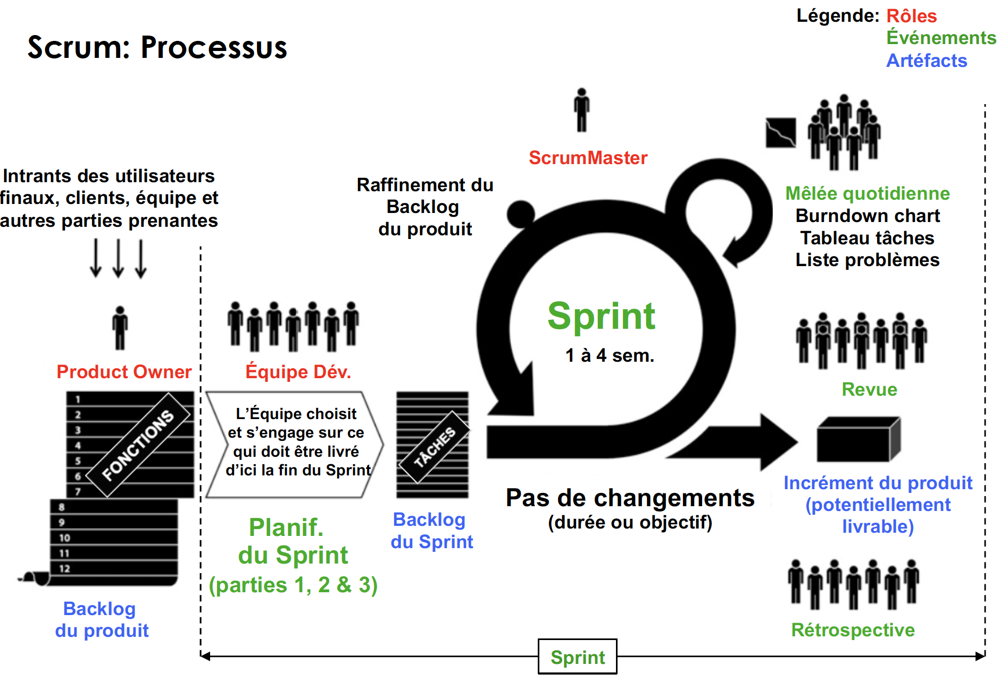
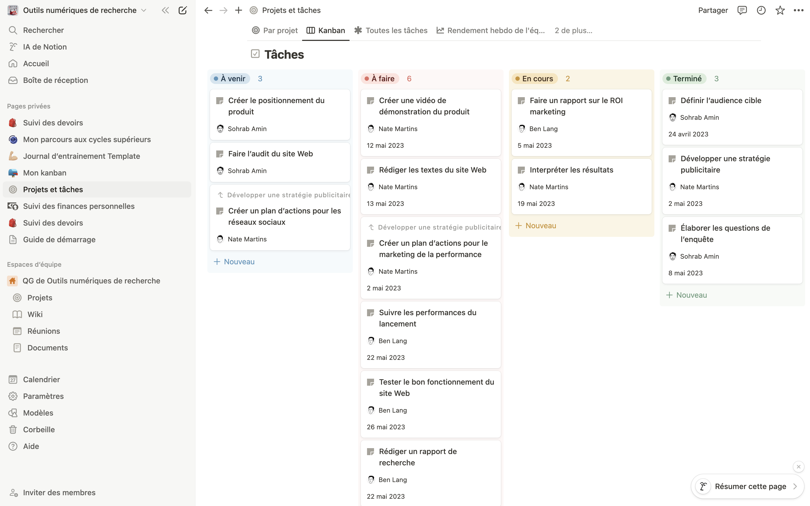

3 Outils de gestion de projet : la méthode Agile pour le monde académique
Adrien Cloutier (Université Laval)

À l’ère du numérique, le monde de la recherche est en fulgurante transformation. Les outils de recherche sont plus nombreux que jamais et l’écart dans la littératie numérique des chercheurs, comme dans la population générale, se creuse chaque année. Avant même de se lancer dans la recherche scientifique (mais ceci est vrai pour tous les domaines d’emplois), les travailleurs qui prennent le temps de s’intéresser et de réfléchir à la gestion de leur « workflow »1, en visant l’apprentissage et l’utilisation des meilleurs outils numériques sur le marché, sortiront avec un avantage compétitif important par rapport à leurs collègues.
Dans cette quête incessante de l’optimisation du travail, la réflexion sur les méthodes de travail et l’utilisation des bons outils devient une clé de la réussite. Que l’on soit chercheur en herbe ou professionnel chevronné, la manière dont on organise son flux de travaux et gère ses ressources peut déterminer la qualité, la quantité et l’impact de ses résultats professionnels.
Loin de souhaiter proposer LA bonne manière de travailler et de structurer son flux de travaux, ce chapitre (et ce livre dans sa globalité) fait le choix de présenter de manière plus générale les différentes méthodes, l’historique des outils, puis d’en présenter les leaders, avant d’entrer dans une présentation détaillée des « choix éditoriaux » de notre équipe. Ces choix sont le fruit d’une utilisation sérieuse et réfléchie de ces outils sur plusieurs années, avec la constante compréhension qu’il existe autant d’outils et d’utilisation pertinents qu’il existe d’individus et de besoins.
Autrement dit, la gestion optimale d’un flux de travaux est propre à chacun ! La personnalité, les qualités, les défis, les connaissances, l’emploi du temps et les compétences sont autant de facteurs qui peuvent mener à préférer un outil plutôt qu’un autre, à choisir une méthode de travail particulière plutôt qu’une autre. Les chercheurs qui préfèrent travailler seuls trouveront certains outils davantage utiles. Ceux qui connaissent la suite Microsoft par cœur peuvent y demeurer pour la gestion de leurs tâches. Par contre, les chercheurs du genre à collaborer trouveront dans d’autres outils une optimisation de leur communication et de leur gestion de projet. Le flux de travaux est unique à chaque individu, à ses besoins, et ce chapitre permettra d’en structurer un élément central : la gestion de projet.
Il est utile de noter qu’à l’ère du numérique et de la multiplication des technologies de l’information et de la communication, le travail collaboratif est plus simple et nécessaire que jamais. Le chercheur qui travaille seul avec ses livres, ses données et ses idées existe encore, et il a ses raisons. Mais c’est devenu un choix plutôt qu’une nécessité, et rarement le chemin le plus court. Les outils de gestion de projet comme Notion, Trello ou Asana permettent de diviser les activités et d’en suivre les progrès, et les outils de gestion de données comme Git, GitHub, Google Drive ou Dropbox d’en partager les codes, les fichiers textes, les données et les résultats avec le monde entier (ces outils sont présentés en détail au Chapitre 4). La philosophie et les valeurs du logiciel libre et du code source ouvert s’inscrivent désormais facilement à toutes les étapes du processus scientifique.
Un flux de travaux médité, personnalisé et collaboratif construit en début de carrière tracera la voie d’une efficacité optimisée des années durant, créant et augmentant sur le court, moyen et long terme la « valeur » du chercheur sur le marché professionnel.
Voici un secret : dans le milieu universitaire, des capacités en gestion de flux de travaux permettent au chercheur de se distinguer et d’augmenter rapidement sa valeur en présentant des compétences rares et recherchées. Ceci est vrai dans tous les domaines, mais pour l’étudiant et le professionnel aux études supérieures, à la recherche de moyens de sortir du lot, entouré d’une multitude de collègues brillants qui s’illustrent académiquement, qui s’imposent par leurs expertises techniques et intellectuelles, leur travail acharné et leur volonté d’être remarqué, le savoir-faire en gestion de projet pourrait bien faire la différence.
À la Chaire de leadership en enseignement des sciences sociales numériques, nous avons pris l’habitude de découper le travail académique en six grandes « fonctions » : la communication, la gestion de partenaires, le développement, l’enseignement, le financement et la publication. Ce découpage est le nôtre, il structure jusqu’à nos kanbans, et il nous sert depuis des années. Tout professeur doit jongler presque quotidiennement avec ces fonctions. Dans ses tâches, il est attendu d’enseigner, il en va de soi, mais également de publier des études scientifiques, de travailler avec sa communauté, de développer des projets novateurs et porteurs, d’encadrer des étudiants à la maîtrise et au doctorat, de trouver le financement nécessaire pour mener ses recherches et d’en communiquer les résultats. Un professeur doit faire tout cela, minimalement, en plus de participer à la vie administrative de son département, de diriger des groupes, des centres ou des chaires de recherches, et plus encore.
Rares sont les professeurs, les étudiants ou les professionnels à parfaitement maitriser chacune de ces six fonctions. Certains vont s’illustrer en enseignement, d’autres seront particulièrement doués dans la recherche et la publication scientifique. Il y a ceux que l’on lit dans les journaux, écoute à la radio ou regarde à la télé, vulgarisant leur expertise au grand public. Quelques-uns sont habiles pour remplir des demandes de financements pour leurs travaux de recherches, alors que des scientifiques préfèrent créer des partenariats avec des entreprises de la société civile et développer des projets pour leur collectivité, enregistrant des brevets et quelques fois même, transformant des idées en start-up.
Malgré les talents particuliers et les préférences, dès l’entrée aux cycles supérieurs, le travail sur ces six fonctions mené en parallèle n’est pas optionnel. Il existe cependant une septième fonction, transversale aux six autres, plus rarement perfectionnée et mise de l’avant : la capacité de gestion de cet immense flux de travaux. Cette septième fonction permet de diriger simultanément les six autres fonctions pour créer un tout cohérent, efficace et productif. De multiples projets, publications, contributions peuvent alors être menés parallèlement ou conjointement, en faisant d’une pierre plusieurs coups. Bien gérées, des équipes comptant des dizaines d’étudiants, professeurs et professionnels peuvent collaborer, se partager des tâches et miser sur les talents particuliers de leurs membres pour offrir des résultats supérieurs en qualité et en quantité.
L’exercice de cette septième fonction est le secret bien gardé des grands talents de notre société. Elle permet d’émerger et de se faire remarquer à l’intérieur d’un immense bassin de personnes qualifiées, voire surdouées, car peu y accordent le temps et l’énergie nécessaires. Pour développer une expertise en gestion de projet dans le milieu académique, ce chapitre présente la méthode Agile et ses outils, en offrant des exemples concrets d’utilisation. Il faut noter cependant que, bien que nous présentions des formes possibles d’utilisation, il existera toujours autant de bonnes façons de travailler qu’il existe d’individus uniques, de contextes ou d’équipes. Ces exemples sont donc offerts uniquement à des fins d’inspiration. Au bout du compte, la réflexion sur la gestion de projet appartient à chacun. L’important est de prendre le temps nécessaire pour mener cette réflexion.
3.1 Point d’observation : retour sur l’origine de la recherche de productivité
3.1.1 Des méthodes traditionnelles à la gestion scientifique
Avant le XXe siècle, la seule façon d’augmenter la production était d’exiger des travailleurs plus d’efforts et de plus longues heures. Tout change avec l’Américain Frederick Taylor (1856-1915), considéré comme le père de la gestion scientifique. Dans The Principles of Scientific Management (Taylor, 1911), Taylor fait de l’organisation du travail un objet d’étude en soi, que l’on peut observer, mesurer et améliorer. Son associé, Henry Gantt (1861-1919), a légué son nom à l’une des visualisations de suivi des étapes de production les plus populaires au monde, encore à ce jour. Le diagramme de Gantt permet depuis plus d’un siècle de projeter les différentes phases de production d’un projet sur une ligne du temps, en représentant les dépendances entre elles, de manière à prévoir leurs séquences de réalisation. Dans les années 1990, Microsoft Project met le diagramme de Gantt sur les ordinateurs de bureau et le popularise bien au-delà des ingénieurs, ouvrant une nouvelle ère de réflexion sur la productivité.
Des pyramides aux chemins de fer, de multiples solutions de gestion ont été développées au cours des siècles, mais l’absence des technologies de l’information et de la communication n’a pas permis avant les années 1950 de structurer et de populariser les idées. En 1958, à la demande de la marine américaine, le Program Evaluation and Review Technique (PERT) voit le jour avec comme objectif de structurer le développement du programme de missiles balistiques nucléaires des États-Unis, alors en retard sur celui de l’Union soviétique. La méthode PERT est toujours utilisée aujourd’hui pour visualiser les relations entre tâches, coûts et délais.
À partir de ce succès, les entreprises modernes à la recherche de profits ont vite compris les avantages liés à l’optimisation du travail. Le Project Management Institute (PMI) est lancé en 1969 aux États-Unis, structurant et distribuant un langage désormais universel pour la gestion de projet, basé sur l’idée d’une « méthodologie » bien définie. Le PMI décrit la méthodologie comme « un système de pratiques, de techniques, de procédures et de règles utilisé par ceux qui travaillent dans une discipline » (Project Management Institute, 2021). De nombreuses méthodologies de gestion de flux de travaux se sont développées au cours des dernières décennies, dans une course vers la recette secrète de la productivité d’entreprise. Tous les outils numériques de gestion de flux de travaux contemporains mettent de l’avant une ou plusieurs de ces différentes méthodologies.
3.1.2 L’émergence de l’Agilité
Aujourd’hui, ces méthodes sont généralement présentées en deux grandes catégories : les méthodes dites « traditionnelles », comme celles présentées ci-dessus (en plus des méthodes Waterfall, PRINCE2, etc.), et les méthodes « Agiles ». L’Agilité voit le jour en 2001, avec la publication du Manifeste Agile (Beck et al., 2001), conceptualisé et destiné au nouveau domaine en pleine expansion du développement logiciel.
Les auteurs se sont toutefois bien retenus d’en inscrire une définition précise, misant plutôt sur une série de valeurs et de principes qui se doivent d’être partagés par tous les membres d’une équipe dite « agile ». C’est peut-être cette décision qui permit à l’Agilité de traverser le temps et de s’inscrire davantage comme une grande philosophie du travail, pouvant être facilement adaptée à divers contextes parfois bien éloignés du développement logiciel, plutôt que comme une méthodologie aux règles strictes.
Ainsi, pour être considéré Agile, un respect des valeurs et des principes demeure essentiel. Contrairement aux méthodes traditionnelles privilégiant la planification du « haut vers le bas » (des décisions prises par les dirigeants, qui envoient les ordres à accomplir à l’intérieur d’un budget et d’un calendrier), la gestion de projet Agile mise sur des cycles itératifs courts, des équipes autonomes et disciplinées, dans une logique du bas vers le haut, basée sur les besoins réels de la clientèle.
Pour illustrer la différence entre les deux approches, un exemple fréquemment donné est celui du logiciel Excel de Microsoft, dont le développement était, à l’origine, issu d’une méthode traditionnelle de gestion de projet. La compagnie rendait disponible à l’utilisateur des versions créées à l’interne, par des développeurs respectant des budgets, des calendriers et des directives provenant de leur gestionnaire. Dans les années 1990 et 2000, le public a ainsi connu Excel 97, puis Excel 2000, et Excel 2007.
La logique de la gestion de projet Agile est inversée : un logiciel se construit sur de courtes périodes itératives, en offrant à chaque fin d’itération un nouvel incrément du produit en fonction du besoin communiqué par l’utilisateur. Ainsi, Apple propose des mises à jour régulières de ses logiciels, réglant des bugs ou offrant un nouveau service attendu de sa clientèle. La très forte majorité des entreprises informatiques ont aujourd’hui délaissé les méthodes traditionnelles pour se retourner vers le travail Agile, itératif et incrémental.
Si ces philosophies de gestion de projet peuvent sembler à première vue en complète opposition, elles offrent chacune des avantages et des inconvénients qui peuvent encourager le développement d’une utilisation mixte, précisément adaptée aux besoins de son utilisateur. Et si ces méthodes ont été développées pour optimiser la production en entreprise ou le développement logiciel, elles sont aujourd’hui répandues dans toutes les sphères de travail de la société. Au Québec, par exemple, plusieurs municipalités, caisses, milieux d’enseignement et entreprises de tous les secteurs opèrent actuellement un virage Agile. Chaque année en octobre, depuis déjà plus de 15 ans, la ville de Québec accueille l’Agile Tour, grand évènement organisé par l’organisme Agile Québec lors duquel se rencontrent plus de 700 adeptes de l’Agilité pour « partager leurs savoirs, leurs expériences et leurs dernières découvertes ».
Les « méthodes Agiles », grande famille toujours en expansion dont tous les membres (méthodes Scrum, Kanban, XP, etc.) ont en commun la « philosophie » Agile, ont le vent dans les voiles. Leur popularité prouve que la gestion de projet ne se limite pas au déploiement de nouvelles technologies. Cependant, si les entreprises et les administrations ont toutes le réflexe de mettre en place une méthode de gestion de projet, peu d’universitaires prennent le temps de réfléchir à leur processus afin d’optimiser leur production (c’est-à-dire le rapport entre le temps investi, la qualité, la quantité et la pertinence de leurs travaux scientifiques).
Dans ce contexte, certains qualifient l’Agilité de « mode », davantage utile pour des exercices de communication publique et d’image d’entreprise, plutôt que pour une réelle recherche d’efficacité et d’optimisation. L’Agilité a été (et est toujours) galvaudée et utilisée à toutes les sauces. Mais les valeurs et les principes du manifeste de 2001 demeurent. Sans un respect et une bonne compréhension de ceux-ci, une équipe échouera dans sa mise en place d’une stratégie agile. Lorsque bien réfléchie et adaptée à son contexte, la philosophie Agile a maintes fois fait ses preuves.
La suite de ce chapitre propose une marche à suivre Agile adaptée au milieu académique, ainsi que des outils pour développer et appliquer une gestion du flux de travaux efficace, utile à la fois pour les individus travaillant seuls, mais particulièrement adaptée pour les équipes de recherche.
3.2 Arpentage et choix éditorial : la méthode Agile
3.2.1 Les valeurs fondamentales de l’Agilité
Comme le logiciel libre, l’Agilité est avant tout une philosophie : une façon de percevoir son travail, son temps, la division de son travail, les relations et l’implication de son équipe, afin de produire des livrables structurés qui répondent à des besoins concrets. Cette philosophie repose sur quatre grandes valeurs fondamentales visant à valoriser :
- Les individus et leurs interactions, plutôt que les processus et les outils ;
- Des solutions opérationnelles, plutôt qu’une documentation exhaustive ;
- La collaboration avec les clients, plutôt que des négociations contractuelles ;
- L’adaptation au changement, plutôt que le respect d’un plan.
Dans le contexte du milieu académique, cela pourrait se traduire par :
- Des échanges constructifs avec la direction et les pairs, plutôt que les apprentissages isolés des méthodologies et des outils de recherche ;
- Des résultats tangibles et réguliers, plutôt qu’une idéation interminable ;
- Une contribution scientifique utile à la société et à l’avancement des connaissances, plutôt qu’un acharnement intellectuel aussitôt tabletté ;
- L’adaptation aux nouvelles découvertes et aux nouvelles idées, plutôt que l’application rigide du devis de recherche initial.
Loin de dire que l’apprentissage d’outils n’est pas utile en Agilité, la première valeur rappelle que la recherche académique est avant tout une aventure collaborative lors de laquelle les discussions avec les collègues permettent de résoudre de nombreux défis, de comprendre les contributions recherchées et de créer des publications ou projets pertinents et de qualité. L’utilité des méthodes de travail et des outils est optimisée à l’intérieur d’une équipe engagée.
La deuxième valeur présente le cœur de l’application concrète de l’Agilité : un projet Agile doit être divisé, dès le départ, en de nombreux livrables, chacun avec une date d’échéance déterminée. Plutôt que de prendre des mois, voire des années à rédiger un devis (qui sera largement modifié dans tous les cas, la version finale d’une thèse n’a bien souvent rien à voir avec son idéation initiale), un projet Agile produit une grande quantité de petits « incréments », qui permettent de le faire avancer concrètement. Chaque livrable (une petite partie du projet, par exemple « 2 pages de la revue de littérature ») peut ensuite être évalué, adapté et potentiellement permettre une réévaluation du devis initial.
La troisième valeur répond à un impératif de la science : offrir des contributions originales répondant à des lacunes de la littérature. Le Chapitre 5 traitera de cet aspect et présentera des outils pour réaliser des revues systématiques de la littérature, de sorte à circonscrire un champ d’études et à repérer les failles et apports potentiels. La quatrième valeur présente l’importance de l’adaptation au changement. En recherche, il est essentiel d’accepter que les résultats puissent dévier des hypothèses initiales, et être capable de réajuster son plan en fonction de l’évolution des données et de nouvelles orientations méthodologiques ou théoriques.
Le respect des trois premières valeurs permet ainsi l’application de la dernière : un projet Agile divisé en de multiples petits livrables peut et doit être révisé régulièrement. Des résultats concrets permettent des rétroactions fréquentes, qui viendront alimenter la réflexion sur le devis initial au fur et à mesure de l’évolution parallèle de la science, de la technologie, des méthodologies, de l’arrivée de nouvelles questions de recherche et de nouveaux besoins de la société.
3.2.2 L’approche Scrum adaptée au contexte académique
Ces valeurs ouvrent la porte à la méthode de travail proposée dans ce chapitre pour appliquer concrètement l’Agilité au contexte académique. Il s’agit d’une proposition unique, testée et adaptée à l’intérieur de plusieurs équipes de recherche. Il est à noter ici que l’Agilité se divise en de multiples méthodologies, telles que Scrum, Kanban, XP, Crystal, Lean, etc. Ce chapitre proposera l’application conjointe des approches Scrum (Schwaber & Sutherland, 2020) et Kanban (Anderson, 2010), particulièrement adaptée et utile au milieu académique, et qui reposent sur les caractéristiques suivantes :
- Une cadence de travail soutenue grâce à un cycle de Sprints ;
- Un suivi régulier des objectifs grâce à de courts Scrums ;
- Un avancement itératif et incrémental pour des livraisons régulières de petites parties fonctionnelles ;
- Une division du travail en Stories à l’intérieur d’un tableau Kanban.
La Figure 3.1 présente le cycle traditionnel d’application de l’approche Scrum dans un contexte de travail collaboratif. Dans le cadre académique, toutes ces composantes peuvent facilement être adaptées.
Le processus commence par l’organisation d’une « planification de sprint ». Un sprint dure généralement entre une et quatre semaines (dans le contexte du développement logiciel, une semaine peut être parfois très utile lorsque les délais sont serrés). Dans le contexte académique, un sprint de trois ou quatre semaines s’avère plus adapté, voire de 2 ou 3 mois dans le cas d’une rédaction de thèse. Lors de la planification, toute l’équipe se rencontre quelques heures (généralement deux ou trois heures, en fonction du nombre de projets en cours et/ou des publications en rédaction) pour déterminer les grands objectifs qui devront être réalisés, projet par projet, publication par publication, d’ici la fin du sprint. Un sprint se conclut toujours par le retour en plénière pour la planification du sprint suivant. Cette nouvelle planification de sprint doit désormais débuter par une revue de sprint, lors de laquelle les objectifs du sprint terminé sont évalués, projet par projet, publication par publication, puis par une rétrospective, où les processus cette fois sont évalués. L’équipe est alors invitée à partager son avis sur la méthode de gestion de projet, afin d’adapter le processus au contexte particulier et de renforcer son utilité.
La planification de sprint est menée par le Scrum Master, un membre désigné par l’équipe pour faire le lien entre le Product Owner (dans notre contexte, la direction de l’équipe de recherche) et tous les membres de l’équipe qui travaillent concrètement sur les projets et publications (les étudiants, par exemple). Dans le langage universitaire, le Scrum Master pourrait représenter le rôle de coordonnateur. Il est toutefois recommandé que le Scrum Master ait suivi une formation, voire obtenu sa certification. De nombreuses entreprises offrent des formations de deux ou trois jours au Québec, pour quelques milliers de dollars, et l’examen de certification se passe en ligne sur le site de Scrum.org, pour quelques centaines de dollars. Une formation Agile comme Scrum Master a une réelle valeur sur le marché de l’emploi, et les entreprises qui cherchent des Scrum Masters certifiés offrent des salaires nettement au-dessus de la moyenne.
Chaque projet est dirigé par un chargé de projet, dont le rôle est de veiller à la coordination de son équipe. Le chargé de projet organise les rencontres d’équipe au besoin, divise les tâches entre les membres, prend la parole lors de la planification de sprint pour présenter la revue du sprint, et annoncer les prochains objectifs prévus, qui seront ensuite discutés en groupe. Quand tous les objectifs pour tous les projets et pour toutes les publications ont été clairement établis, approuvés par l’ensemble des membres, en considération du temps que tous sont réalistement en mesure d’accorder, puis après avoir déterminé la date de la prochaine planification de sprint, la séance est levée. Une activité sociale d’équipe est à ce moment fortement encouragée !
Pour assurer un suivi régulier de l’avancement des objectifs, le Scrum Master met à l’agenda un ou deux scrums par semaine. Il s’agit de très courtes rencontres où l’ensemble de l’équipe se retrouve, idéalement entre 15 et 30 minutes maximum, selon le nombre de projets, et lors desquelles chaque chargé de projet doit répondre à trois questions :
- Qu’est-ce qui a été accompli par mon équipe depuis le dernier scrum ?
- Qu’est-ce qui sera fait d’ici le prochain scrum ?
- Y a-t-il des blocages ?
Tour à tour, le Scrum Master nomme les projets et les publications, dans leur ordre de priorité, et offre la parole aux chargés de projet pour résumer les avancées de leur équipe. Contrairement à la planification de sprint, la direction n’a pas besoin d’assister à ces scrums. Le Scrum Master s’assure, si nécessaire, de la tenir informée des bloquants ou des ajustements à mener au calendrier ou aux prochains livrables. Les scrums sont l’occasion pour l’équipe d’assurer un suivi régulier des livraisons attendues d’ici la fin du sprint.
L’une des caractéristiques fondamentales des méthodes Agiles est le développement des projets de manière itérative et incrémentale. L’itération est le processus répété et cyclique mené grâce aux sprints. Une équipe Agile est en tout temps en sprint, jusqu’à la livraison finale du projet ou de la publication (si fin prévue il y a). Un incrément est la réalisation d’une petite partie dite « fonctionnelle » du projet, qui peut être soumise à évaluation. Dans le cadre académique, un incrément pourrait être la remise d’une première version d’une revue de littérature, la réalisation d’une première étape d’un code R pour l’analyse de données de thèse, le premier jet d’un devis, etc. Plutôt que d’attendre à la toute fin du processus pour le dépôt complet d’un projet, une équipe Agile divise son projet en de multiples itérations, qu’elle soumet pour évaluation à chaque planification de sprint lors de la phase de la revue de sprint. Par une démonstration, toute l’équipe peut alors constater et discuter du nouvel incrément proposé, par exemple la présentation de la section méthodologie d’un article scientifique, et déterminer ensuite les objectifs du prochain sprint pour la livraison de l’incrément suivant, disons la collecte de données. Tout projet est ainsi divisé en phases, en « séquence de développement », d’un sprint à l’autre, de manière itérative, de sorte à livrer des incréments fonctionnels du projet qui peuvent être discutés et révisés.
Contrairement aux méthodes traditionnelles, il est essentiel de comprendre que les méthodes Agiles se nomment « Agile » pour une raison : elles encouragent la flexibilité. Plutôt que de passer d’un sprint à l’autre en suivant un plan rigide déterminé des mois, voire des années auparavant en fonction d’un budget et d’un calendrier coulés dans le béton, les méthodes Agiles mettent de l’avant le « cycle » de travail, les itérations, qui permettent de revoir le plan, de l’adapter en cours de route, particulièrement lors de la planification de sprint. Normalement, lorsque les objectifs de sprint ont été validés par l’équipe, il n’est pas recommandé de les changer en cours de sprint. Par contre, de retour en planif, chaque membre de l’équipe a son mot à dire sur la suite ; sur ce qui fonctionne bien, sur ce qui devrait être adapté, toujours avec le projet final en tête.
3.2.3 L’Agilité au quotidien : travailler seul
Pour tout projet ou publication menés seuls, comme la rédaction d’un mémoire, d’une thèse, ou la création d’un grand album de photos familiales, ou pour tout besoin de gestion de vie personnelle et d’objectifs d’avenir, ce processus n’est pas bien différent. Une personne Agile pourrait, le soir du jour de l’an, mettre sur papier un certain nombre de résolutions. Elle peut ensuite découper son année en 12 sprints de 4 semaines, et répartir l’accomplissement de ses résolutions en 12 incréments. Chaque incrément planifié doit être réaliste et faire avancer, petit à petit, les objectifs vers la livraison finale, à la fin de l’année. Une fois aux quatre semaines, cette personne peut prendre un moment seul de planification de sprint pour faire la revue des quatre dernières semaines et réviser les objectifs à atteindre pour les quatre semaines suivantes.
L’Agilité ne s’applique pas uniquement au monde du développement logiciel, voire à une grande équipe académique. Elle est d’abord et avant tout une philosophie, possible d’être menée, réfléchie et appliquée à son quotidien.
L’efficacité et les nombreuses possibilités qu’offre cette méthode ont généré, bien entendu, un marché très lucratif d’outils numériques. La section suivante présentera les leaders du marché, et offrira des instructions sous forme de conseils pour l’utilisation adaptée de ces outils, notamment par la création de stories à l’intérieur d’un tableau Kanban.
3.2.4 Les outils de gestion de projet sur le marché
Tous les outils numériques de gestion de projets actuels (ou presque) sont conçus sur les enseignements des méthodes Agiles. Pour le contexte académique, ce chapitre propose en premier lieu l’application de l’approche Scrum, détaillée précédemment. Une seconde approche Agile, la méthode (et l’outil) Kanban, se combine aisément et efficacement à l’approche Scrum et au travail scientifique. Le Kanban est l’outil par excellence mis de l’avant dans les très populaires logiciels de gestion de projet Trello, Jira, Monday, Asana et Notion (cette liste n’est pas limitative. À ce jour, il existe des dizaines de logiciels de gestion de projets tout aussi populaires les uns que les autres comme ClickUp, Wrike, Basecamp, et même la plateforme de communication Slack, qui propose depuis 2024 sa solution de gestion de projet pour répondre aux attentes en gestion de projet de ses clients).
Offert de base dans tous les outils numériques nommés ci-dessus, le Kanban permet d’intégrer et de visualiser, dans un tableau comptant au minimum 3 colonnes (« À faire », « En cours », « Terminé »), les « tâches » à réaliser dans une échéance pour avancer la réalisation des objectifs de sprint. En Agilité, une tâche est nommée Story. Une story est un livrable, un morceau du projet (le « quoi »), pris en charge volontairement ou délégué à un membre de l’équipe par le chargé de projet. On utilise le terme story pour distinguer de la rapide tâche ; une story peut quelques fois comporter plusieurs tâches (le « comment »).
3.2.5 Un exemple concret : planifier une étude scientifique
Voici un exemple d’application de tous les concepts Agile vus jusqu’à présent. Dans le milieu académique, un projet pourrait être la création d’une étude scientifique. La création de cette étude pourrait être divisée en dix sprints de quatre semaines, présentant ainsi dix livrables clairs qui permettent un suivi en planification de sprint (bien sûr, certaines études peuvent prendre des années à aboutir, certaines collectes de données sont plus longues, mais là n’est pas le point : toute étude menée en gestion de projet Agile peut être réfléchie d’emblée en fonction de son contexte et de ses objectifs, et être divisée en un nombre logique et réaliste de sprints, que ce soit 5 ou 15) :
- 1er sprint : Idéation et structuration d’une question de recherche ;
- 2e sprint : Première version d’une revue de littérature ;
- 3e sprint : Rédaction du devis, choix théoriques, enregistrement des hypothèses, demande éthique ;
- 4e sprint : Préparation méthodologique, raffinement de la revue de littérature ;
- 5e sprint : Collecte des données ;
- 6e sprint : Analyse des données ;
- 7e sprint : Rédaction des résultats ;
- 8e sprint : Rédaction de l’étude complète (introduction, discussion) ;
- 9e sprint : Révision du texte ;
- 10e sprint : Soumission.
En divisant un projet de cette manière, les ressources nécessaires peuvent être réfléchies et réparties à l’avance (par exemple : il faudra engager deux auxiliaires de recherche pour la collecte de données du 5e sprint). Tous les objectifs de sprint deviennent évidents et prévisibles, et chaque story peut être rédigée pour accomplir ces objectifs.
Un outil numérique comme Notion peut ensuite être utilisé pour créer et remplir un Kanban, qui se compose ici de quatre colonnes :
- À venir : c’est le backlog (le « registre des tâches ») du projet. Toutes les stories qui seront à réaliser pour chaque objectif lors de sprints futurs s’y trouvent déjà, en ordre, de sorte à visualiser le travail précis « à venir » ;
- À faire : c’est le backlog du sprint. Toutes les stories qui sont à réaliser à l’intérieur du sprint en cours s’y trouvent, avec une date d’échéance et une assignation ;
- En cours : Quand une story du sprint est engagée, le membre de l’équipe à qui elle est assignée doit la déplacer dans cette colonne, pour signaler son avancement ;
- Terminé : Toutes les stories du sprint en cours qui sont accomplies y apparaissent.

En sortant de la première planification de sprint, l’équipe de recherche se retrouve face à des objectifs clairs, réalistes, divisés en stories rédigées dans un Kanban bien rempli. Ne reste plus qu’à se mettre à la tâche, et à se retrouver lors des scrums hebdomadaires pour assurer le suivi.
À la fin du sprint, lors de la rencontre de planification du sprint suivant, une équipe Agile débute toujours par la revue de sprint, qui permet de s’assurer que toutes les stories qui avaient été déplacées, il y a quatre semaines, de la colonne « À venir » à « À faire », se trouvent désormais dans « Terminé ». Grâce à la réalisation de toutes les stories, les objectifs de sprint devraient être considérés comme accomplis. Il est maintenant temps de se préparer à l’atteinte des objectifs du sprint suivant, en vidant la colonne « Terminé », puis en déplaçant les stories du sprint suivant, qui étaient dans « À venir », dans « À faire » en leur ajoutant une échéance et une assignation. Le cycle peut alors recommencer. Une itération est terminée, un incrément du projet a été livré, et une nouvelle phase de développement est prête à être entamée.
En mélangeant de cette manière les approches Agile Scrum et Kanban, on obtient tout simplement l’approche Scrumban !
3.2.6 Panorama des outils disponibles
Comme mentionné, tous les outils numériques sur le marché (ou presque) proposent actuellement les éléments nécessaires à la mise en place d’une gestion de projet Scrumban. En 1984, la sortie de Microsoft Project est une révolution en gestion de projet. La première version disponible sur Windows en 1990 permet enfin aux chefs de projet d’utiliser un outil numérique de planification pour gérer des tâches, visualiser les étapes de développement dans des diagrammes de Gantt, suivre la gestion des coûts et des ressources, et extraire l’ensemble des données pour produire des analyses et des rapports d’avancement de projet. À l’ère des méthodes traditionnelles, Microsoft Project domine le marché, et reste longtemps le numéro un mondial. À l’ère de l’Agilité, les solutions de Microsoft pour la gestion de projet existent toujours, mais ne s’adressent plus uniquement aux chefs d’équipe. Microsoft Planner, sorti en 2015, est la proposition plus simple de Microsoft pour le travail d’équipe qui se compare davantage aux applications numériques visuelles, flexibles et extrêmement populaires ayant fait irruption sur le marché depuis 2010. En croisant ses outils de gestion de projet et l’outil de communication Teams, Microsoft permet à tous les membres d’une équipe de gérer et suivre l’évolution de leur travail de manière Agile. Pour les utilisateurs des services Microsoft, cette solution intégrée peut être très avantageuse, avec un faible coût d’apprentissage.
Longtemps seule et dominante dans le marché, Microsoft compétitionne aujourd’hui avec une multitude d’acteurs. Les premières plateformes collaboratives comme Basecamp (2004) et Jira (2002) marquent le début du suivi en ligne, permettant aux équipes de travailler à distance, en temps réel, et de suivre leur progression de manière Agile. Développé par la compagnie Atlassian, Jira se concentre particulièrement sur la gestion des suivis de bugs, d’incidents et de projets au niveau « macro », par le suivi des sprints, des objectifs de sprint et des backlog. Jira évolue en parallèle de Trello, un outil lancé en 2011 par Fog Creek Software et acheté par Atlassian en 2017, concentré sur le Kanban, pour le suivi « micro » des tâches. Les différences sont légères avec les applications Asana (2008) et monday.com (2012), toutes basées principalement sur le développement et le suivi de projets Agiles via des vues de tâches en tableau Kanban, en calendrier, voire en Gantt (le diagramme de Gantt, même à l’ère de l’Agilité, demeure toujours très populaire).
Des propositions de logiciels libres et à code source ouvert sont bien sûr présentes en ligne. OpenProject (2012) et Taiga (2014) sont des outils Agiles présentant tous les avantages liés aux logiciels libres tels que la gratuité du service et la possibilité de modification et de redistribution.
| Critères | Microsoft | monday.com | OpenProject | Notion |
|---|---|---|---|---|
| Accessibilité (Gratuit ou peu dispendieux) | Dispendieux | Dispendieux | Gratuit (logiciel libre) | Gratuit jusqu'à un seuil |
| Existence d'une communauté d'utilisateurs | Très grande | Grande | Limitée | Très grande |
| Popularité dans le champ | Populaire | Peu populaire | Peu populaire | Populaire |
| Compatibilité avec d'autres outils | Avec les outils Microsoft | Facilement compatible | Demande un peu d'ajustement | Facilement compatible |
| Transparence et réplicabilité | Faible | Faible | Excellent | Excellent |
| Adaptabilité et flexibilité | Peu flexible | Peu flexible | Très flexible | Très flexible |
3.3 Manuel d’instruction : utiliser Notion
Notre choix d’outil de gestion de projet compatible avec la philosophie Agile s’arrête sur Notion. En août 2024, Notion dépasse la barre des 100 millions d’utilisateurs. Juste avant la pandémie de COVID-19, Notion atteignait son premier million. En l’espace de quelques années, l’outil a rejoint, voire dépassé ses concurrents. Une popularité incontestable, notamment due à sa grande flexibilité.
Créé en 2013 par Ivan Zhao et Simon Last, Notion se présente comme un outil de gestion de projet « tout-en-un », offrant à l’utilisateur des pages blanches qu’il doit lui-même remplir en fonction de ses besoins. Les pages peuvent intégrer du texte, des bases de données, des images, des vidéos, des PDF, des liens Web, et bien plus. Chaque page peut ainsi devenir un outil de documentation, ou un tableau Kanban rempli de stories, ou des notes de rencontres, ou un calendrier des livrables de sprint. Il importe à l’utilisateur de connaitre ses besoins, et d’être créatif.
Cette liberté peut représenter un défi. Il est nécessaire d’avoir l’esprit « architecte » pour apprécier Notion. En comparaison, monday.com ou Trello offrent un cadre de travail déjà défini et balisé à l’utilisateur. Les instructions à l’entrée sont claires : l’utilisateur a un Kanban à remplir, et il peut facilement faire le suivi de ses tâches.
Sur Notion, tout (ou presque) est possible. Notion possède d’ailleurs son propre langage de formules pour coder des fonctions originales dans des bases de données.
Il n’est toutefois pas nécessaire d’aller dans la complexité : sans être un logiciel libre, Notion offre la possibilité à ses utilisateurs de créer leurs propres « modèles », et de les offrir (voire de les vendre, si désiré !) à la communauté Web. Ainsi, des dizaines de milliers de modèles Notion sont disponibles en ligne. De multiples modèles sont disponibles pour répondre à tous les besoins : que ce soit pour la gestion des finances ou pour gérer la vie étudiante, la communauté Notion est large et structurée. Tous les modèles disponibles s’importent en deux clics et peuvent être modifiés complètement au besoin. Avec le temps et l’expérience, il est même possible de créer ses propres modèles et de les offrir gratuitement (ou à prix fixé !) à la communauté.
L’utilisation individuelle de Notion est tout à fait gratuite. En optant pour une version payante, l’utilisateur obtient davantage de possibilités (comme l’utilisation de l’intelligence artificielle intégrée de Notion), mais l’utilisation gratuite de base peut être bien suffisante selon les besoins.
L’intelligence artificielle entre aussi dans la gestion de projet, et pas seulement par la fonction payante de Notion. Dans notre équipe, un agent lit les notes de nos rencontres et propose les stories correspondantes dans le kanban, avec une échéance et une personne assignée. Un humain valide chaque story avant qu’elle n’existe. C’est le même principe qu’au Chapitre 2 pour le code. L’outil accélère, l’équipe décide.
Avec un seul outil, Notion permet de gérer à la fois la vie personnelle et la vie professionnelle. Pour se lancer, des guides simples sont disponibles sur le site Web.
Notion possède également sa propre application de calendrier. Notion Calendar permet d’importer les calendriers Google, en plus d’afficher tous les jours les échéances de stories.
Pour créer une page Notion à l’occasion d’un prochain voyage entre amis, rien de plus simple ! Il est possible d’y intégrer une liste d’idées d’activités, un calendrier des destinations, un Kanban rassemblant toutes les tâches à accomplir d’ici au départ, et de partager le tout aux amis via le Web. En quelques clics, toutes les pages Notion peuvent être transformées en site Web consultable et modifiable (si on le souhaite et l’autorise).
Depuis son lancement, Notion est en constante évolution. Impossible de savoir à quoi ressemblera l’application dans 10 ans. Victime de son succès, l’entreprise s’est plusieurs fois réinventée, misant sur une gestion de projet Agile, en communication avec sa clientèle, pour développer un outil à l’image des besoins et des intérêts de ses utilisateurs.
3.4 En terminant
La gestion de projet est une compétence transversale qui peut transformer la manière dont le chercheur aborde ses projets académiques et professionnels. La philosophie Agile, avec ses valeurs de collaboration, de flexibilité et de livraisons régulières, offre un cadre particulièrement adapté au milieu universitaire, où les projets de recherche évoluent constamment au gré des découvertes et des nouvelles orientations. En combinant les approches Scrum et Kanban à l’aide d’outils comme Notion, il est possible de structurer son travail de manière itérative, de suivre ses progrès et de collaborer efficacement avec ses collègues. Il faut cependant garder en tête que ces outils et méthodes ne sont que des moyens au service des objectifs de chacun : l’important est de prendre le temps de réfléchir à son propre flux de travaux et de l’adapter à ses besoins, à sa personnalité et à son contexte.
L’Office québécois de la langue française recommande la traduction « flux de travaux », expression qui sera utilisée dans ce chapitre pour désigner l’ensemble des pratiques et outils visant à optimiser l’efficacité et la productivité.↩︎